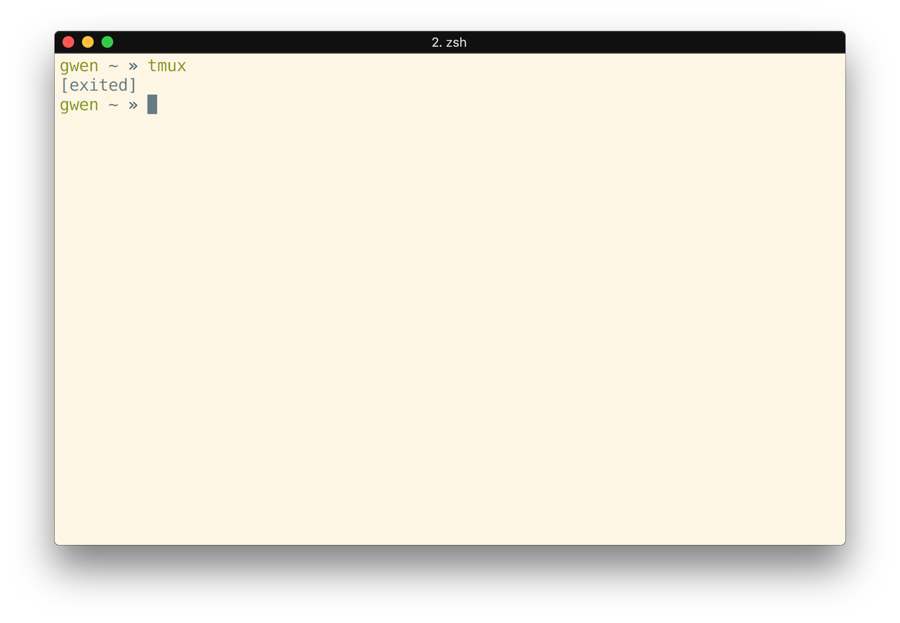
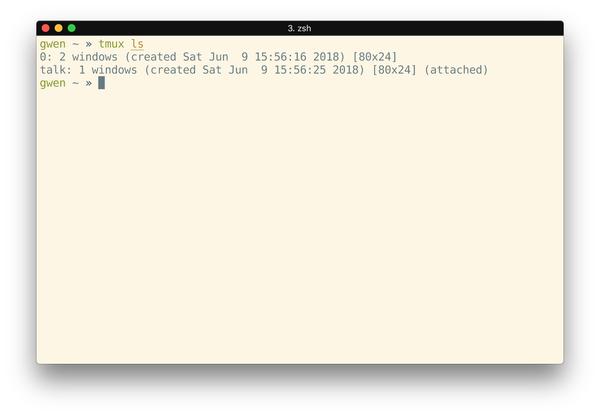

[Chicago.PM](http://chicago.pm.org)
[Chicago.PM](http://chicago.pm.org)
http://preaction.github.io/articles/tmux/talk/chicago
[Chicago.PM](http://chicago.pm.org)
--- {Topic}
^ Since showing is better than telling, I'm going to show you what Tmux does.
screen^ But first, who has used GNU screen? Okay, so a lot of this will be familiar to you.
^ We're not going to go over installing Tmux. It's available from all major package managers including Homebrew for MacOS, Cygwin, and works inside Windows Subsystem for Linux (Ubuntu-in-Windows)
--- {Topic}
^ To start Tmux, we need to run the tmux command

^ Once we run this command...

^ We get a shell prompt again, but now we have a bar at the bottom of the window. This is the Tmux status bar.

^ Over in the bottom left in square brackets we have the session name,
which defaults to 0. We'll talk about using session names later.
^ Next to that we have window information. >> We have one window, >> window 0,
currently running
zsh(my shell), >> and the asterisk says it is the selected window. Creating and managing windows is the most useful part of Tmux, and we'll spend a lot of time talking about them.
^ Finally, on the right, we have some information about our machine: My laptop's hostname is "gwen.local", and this screenshot was taken at 8:32 PM on May 22, 2018.
^ Otherwise, this is just what we had without Tmux. We can type a command into our shell and execute it...
^ and the output is displayed on our screen. Amazing!

^ And then when we're done, we can exit our shell

^ And we exit Tmux.
--- {Topic}
^ However, instead of exiting, we can detach from our Tmux session and re-attach to it later. When we detach from a session, Tmux stays running in the background. Everything in our session keeps running, too, waiting for us to return.

^ So let's start Tmux again
^ But this time let's detach from our session instead of exiting. We do this by typing "Ctrl+b d". >> "Ctrl+b" is the prefix. Typing this tells Tmux we're about to give it a command. >> And then "d" for "detach". If you're a screen user, screen uses "Ctrl+a" as its prefix by default, and later I'll show how to configure what the prefix is if you prefer "Ctrl+a".
^ When we detach, we're back in our terminal window where we left off. But our Tmux session is still running.
^ To get back to our session, we can run "tmux attach-session", or for brevity "tmux attach", or for even more brevity "tmux a".

^ When we do that, we're right back where we left off.
^ Why is this useful? The most common use is over SSH. Connect to a remote machine via SSH and then run Tmux. If you detach, or get disconnected, you can later reattach and pick up where you left off. For some people, this is the only reason they use Tmux.
^ This is also good for just putting local tasks in the background, unattached to any terminal. There are other ways to do this, nohup and disown, but Tmux makes it easier to get back to those tasks later (it's not impossible with nohup/disown, just more difficult / annoying).
{Topic}
^ Now that we've reattached, we can try some other features. The name "Tmux" stands for "Terminal Multiplexer", making one terminal act like multiple terminals. The first way we can do that is with windows.

^ Here we are back in Tmux.

^ Remember that we already have one window, window 0. Let's open a program in this window. I'll open my editor, Vim.

^ Okay, now this window is busy running Vim. In order to also do something else, we will need to open a new window. >> We can open a new window with "Ctrl+b c". "Ctrl+b" is the prefix, and "c" for "create window".

^ Now we have a new window, with a new shell.
^ Our new window is >> window number 1, >> running "zsh", >> and is our current window.

^ And notice our old window now has a >> dash ("-") instead of an asterisk. This means it was the previous window we were looking at. There's a lot of information packed in to a tiny space down here.
^ Now, how do we get back to our Vim window? We have multiple ways. >> Since it was the previous window, we can use "Ctrl+b l" ("l" for the last window we were on). "Ctrl+b l" allows you to quickly toggle between two windows. >> We can use "Ctrl+b p" to go back to the previous window numerically in the list >> Or we can choose our window by its number with "Ctrl+b 0". The last one is made more difficult because the first window is window 0, but we'll go over how to configure that to make the windows start at 1.
^ Doing any one of these will bring us back to our Vim window. Then, to get back to our new window, we can do >> "Ctrl+b l" again, since it was our last window >> "Ctrl+b n", to move to the next window numerically >> or "Ctrl+b 1" to go directly to window 1.
^ Then we can run commands in this new window

^ Like look up some documentation for Tmux

^ And then when we're done, we exit the shell
^ We're back to our last window.

^ And our new window is destroyed.
{Topic}
^ The next thing a new Tmux user comes across is that their terminal's scroll bar doesn't work anymore.
^ We can run a command...
^ ... that prints out a lot of data, and when we use our mouse to try to scroll our terminal window back up to see the top...

^ We scroll through the terminal, not the output. Sometimes, we won't scroll at all.
^ This happens because Tmux is keeping the output in a buffer. This is good, it means we can come back to it later. But it means that we need to tell Tmux we want to scroll through the buffer by >> entering "copy mode". We enter "copy mode" by >> pressing "Ctrl+b" and then the left square bracket ("[").
^ In "copy mode" we have two changes to our window.
^ The window name in the bottom bar is >> changed to "tmux" enclosed in square brackets to show we're in copy mode
^ And there are two numbers in the upper right of the screen. >> The first one shows the line we're on (0 is the bottom of the screen) >> The second shows the total number of lines in the buffer
^ We move through the buffer using >> arrow keys >> Page Up / Page Down keys ...
^ ... or Tmux also comes set up with less-style bindings >> (Ctrl+b goes down, Ctrl+f goes up) >> "g" goes to the top, "G" to the bottom. and you can configure other styles (vim and emacs)

^ I hit the "g" key, and I scrolled all the way to the top. Now I can hit the "G" key and scroll back to the bottom.
^ We can also move through our buffer searching for keywords using the
question mark ("?") key to search up, >> and the slash ("/") key to search down.

^ So, to search up we hit the "?" key.
^ Tmux shows us that we're searching up. >> Then we type what we want to look for, and press Enter.
^ Now Tmux shows us our results
^ ... highlights the matched text...
^ ... putting our cursor on the bottom one, since we're searching up ...
^ and tells us how many results are found.
^ We can see the next search result >> by pressing "n", and the previous result by >> pressing "N".
^ Pressing "n" to go to the next result...
^ ... takes me up the page (because I'm searching up).
^ We can exit copy mode by >> pressing "q"...
^ and we're back at our command prompt at the bottom of our window
^ Finally, it's called "copy mode" because we can copy text from the buffer and paste it later. >> Start selecting text by pressing the space bar

^ Now moving through the text will select it. When we've selected the text we want, we can >> press "Ctrl+w" >> or "Enter" to copy the text.

^ And then we can move to another window and >> press "Ctrl+b" and the right square bracket ("]") to paste the text
^ And now our selected text is in our editor. Some of this is a little awkward. I admit that I rarely use copy mode for its copy/paste features, mostly for searching program output, which I then select with my mouse. But there have been some times where copy/paste using copy mode was the only solution. For example, if the text I want to copy takes up more lines than can be displayed on the screen.
{Topic}
^ Okay, so, Tmux can create multiple windows, that's great. But what if I want to look at my editor and my program's output at the same time? For this, Tmux allows splitting windows into panes.

^ To split the editor window vertically, use >> "Ctrl+b" and the percent sign ("%").
^ Now our window is split in two, with a new shell on the right side. We can also >> split horizontally using "Ctrl+b" and double quote ('"').
^ So, now we split our right pane in two horizontally. And we can keep going...
^ and going...

^ and going...
^ and going on in to uselessness. Each pane has its own shell and scroll buffer. When we're done with a pane, we can exit our shell...
^ ... and the space gets reclaimed
^ Now we're back to our editor on one side, our shell on the other. To switch panes to get back to our editor, we can use >> "Ctrl+b" and Left.
"Ctrl+b" and the arrow keys moves between the panes in the window.
^ Now we're back in our editor. If we've split our window, but we need to look at a pane using all available space temporarily, we can use >> "Ctrl+b z" to zoom in to the current pane.

^ Now our editor takes up the full window...
^ ... and down here next to our window >> we can see a "Z" to show we're zoomed.
{Topic}
^ Those are the basics of Tmux: >> Starting and stopping Tmux, >> Attaching and detaching from Tmux, >> Creating, destroying, and switching windows >> Using the scroll buffer and copy mode >> And creating, destroying, and switching panes. With only this, Tmux is a very useful tool.
{Topic}
^ But, we can make it even more useful. The first thing we can do to maximize Tmux's usefulness is to customize it for our needs. Tmux is highly configurable, so we can only go over some of the most useful things here.
^ These are just examples of things you could do, copied from my own configs.
~/.tmux.conf^ The Tmux configuration file is .tmux.conf in our home directory. If
you've never configured Tmux, you'll have to create this file.
^ I'm going to open up ~/.tmux.conf in my editor
^ And it's currently blank, so let's add some configuration
^ The first thing I do in my Tmux is change the prefix.
Ctrl+b^ Remember "Ctrl+b" is called the "prefix". It's what we use to tell Tmux we're about to give it a command. But, to me, Ctrl+B is a finger workout.
Ctrl+a^ Screen users often switch this to Ctrl+A, but Ctrl+A is useful in shells (it moves the cursor to the start of the line).
Ctrl+s^ So I use Ctrl+S: The "S" key is on the home row under my fingers, next to A. And I rarely use Ctrl+S for its original purpose, sending SIGSTOP to stop a process.
set
-g
prefix
C-s
^ To change the prefix, >> we use the set command. >> we give a -g
option to make it a global setting >> and we set the "prefix" >> to
"C-s". The >> capital-C is "control"
unbind
C-b
^ After we change the prefix, we have to do two more things. First, the
default behavior for pressing "Ctrl+b" twice is to send "Ctrl+b" to the
currently-running program. We can stop that behavior by >> using the
unbind command to >> stop "Ctrl+b" from doing anything.
bind
C-s
send-prefix
^ Finally, we need a way to send Ctrl+s to the current program just in case we need to. So, we'll make pressing Ctrl+s twice send a Ctrl+s to the currently-running program. We configure a key using >> the "bind" command, which takes >> the key to bind (Ctrl+s) >> and the command to run ("send-prefix", which sends the configured prefix to our current program)
^ Now our prefix is Ctrl+s, Ctrl+b is just Ctrl+b, and pressing Ctrl+s twice sends one Ctrl+s to our current program. Note: I will keep calling the prefix "Ctrl+b" for the rest of this talk, to try to limit confusion, or increase it, whichever.
^ Next, let's renumber our windows.
^ Having the window number start at 0 is annoying: >> Our keyboards all start numbering at 1 on the left, with 0 on the right.
^ If we use the number keys to switch windows, we have to use the right side of the keyboard to get to the first window on the left.
set -g
base-index
1
^ To fix this, let's >> set (globally) the >> base-index to >> 1.
^ Now our windows will start numbering from 1, not 0
^ Next thing we should configure: The default behavior of Tmux is to have a 1-second delay between when the Escape key is pressed and when it is sent to the underlying program.
^ This is because the Escape character is the first character in an ANSI escape sequence, a way to send special commands to terminals. Extremely special commands like pressing the left arrow to move cursor left, pressing the right arrow to move cursor right, and making text bold
^ Since we use the arrow keys to change panes, Tmux has to wait after it sees an Escape character to see if it's part of an escape sequence. Normally, this takes almost no time. >> But, if you're on a network, the gaps between the bytes >> could take a lot longer.
^ But, as a Vim user, I use Escape a lot to escape back to "normal" mode, the mode that lets me navigate my code. I use it so much I've gotten extremely fast at it. So fast that the escape delay ends up ruining whatever I'm trying to do.
set -g
escape-time
20
^ So, let's configure Tmux to spend less time waiting for an Escape sequence. Let's >> set the >> escape-time to ... >> 20 ms sounds about right to me.

| ⬅️ | ⬇️ | ⬆️ | ➡️ |
| H | J | K | L |
^ With that out of the way, let's make it easier to navigate around panes. >> I'm a Vim user, so in my head I've mapped left, down, up, right to >> H, J, K, L.
bind
h
select-pane
-L
bind j select-pane -D
bind k select-pane -U
bind l select-pane -R
^ So, let's >> bind the >> h key >> to select the pane >> to the left. Now, "Ctrl+b h" will run the select-pane command with the -L option, which goes left. Then let's >> bind j >> to down, bind k >> to up, and
bind l >> to right
^ But we're not limited to only using the prefix: We can bind keys so they work all the time, not just after the prefix. Let's make it so holding the Alt key and pressing h, j, k, or l will also switch between panes.
bind -n
M-h
select-pane -L
bind -n M-j select-pane -D
bind -n M-k select-pane -U
bind -n M-l select-pane -R
^ So this time we use >> bind with the -n flag for "no prefix". We bind "Alt" "h". The "M" stands for Meta, but since keyboards rarely have Meta keys, the Alt key is usually used. >> And Alt-h selects the pane to the left. Again, we do this for >> down, >> up, and >> right.
^ Now we can move through panes using Alt and h, j, k, and l.
^ Now that we've changed our configuration file, we need to load it. We could just restart Tmux, but we could also load our new configuration inside our current session.

^ We can load a config file using Tmux's "source" command. This command
isn't bound to a key, but we can use Tmux's command prompt to use it.
To show the command prompt, >> press Ctrl+b and then the colon key (:).

^ The status bar changes to the command bar
^ The command bar lets us execute Tmux commands. Everything we've written in our configuration file so far has been a Tmux command, and there are a lot more Tmux commands (and we'll get in to fun things you can do with them a bit later)
^ To load the config file, >> we use the "source" command, >> and give it the file we want to load, "~/.tmux.conf". This acts like your shell's source (or '.') command: it reads the file and executes the commands inside to change your current settings.
^ With that done, our prefix is now Ctrl+s, and we can use our HJKL keys to move between our panes. Notice that our windows are not numbered from 1 yet. This is because our config doesn't change existing windows. We could fix this session with another command, but we won't.
{Topic}
^ Of course, we cannot be maximally productive if we can't change how things look.
^ Tmux lets us change the color and position of anything in the status bar.
^ For example, the bottom bar's dark text doesn't have good contrast against the medium green background.
^ And this right side here takes up a lot of space for things I don't need. I may sometimes forget what day it is, but that's what my smartphone is for...
set -g
status-bg
black
set -g
status-fg
white
^ So let's configure a couple things. First, let's make the status bar to have white text on a black background. So, we >> set (globally) the
status background >> to black. And we >> set the >> status foreground to white
set -g
status-left-length
20
set -g
status-right-length
20
^ Next let's configure the amount of space the left side (our session name) and the right side (the date/time) are allowed to take up. We'll need some more space for the session name soon, so let's set the status-left-length to 20. We don't want the right side to take up as much space as it is, so let's set that to 20 as well.

^ Now we've got all this configured, so let's reload our configuration.
Remember that's "Ctrl+b :" to open the prompt, and then >> "source ~/.tmux.conf" to reload the config

^ Voila! Our bottom bar is now black-and-white.
^ And only the hostname and the current time are shown on the right side here
^ There are lots of other theme-related things you can do. There are even plugins that add charts and other distractions down in the status bar. Customize to your needs!
set -g mouse on^ There are a lot more configuration options, including enabling the mouse to select and scroll through the scroll buffer. I don't enable the mouse, because I prefer how the mouse works in iTerm (my terminal), but it can make selecting text easier than using the keyboard to move around.
{Topic}
^ Remember that detaching and attaching sessions is one of Tmux's core features. But what if we don't want to reattach to our running session?

^ If we just run tmux again without trying to attach...
^ we get a new session.
^ Notice in the lower left of the Tmux status bar, our session is now
1
^ Notice also that our first window is window 1, because of our configuration
^ Now we have a new Tmux session completely unrelated to our last session. We can open windows, split them into panes, start programs, and etc... just like our previous session.
^ When we detach, tmux tells us we detached from session 1. Let's try attaching again.

^ When we run tmux attach...

^ ... we get the last session we attached to. Handy!
^ But now how do we get to our first session, session 0? If we use
tmux attach with the -t option, we can specify the target session we
want to attach to. In this case, session 0.
^ Okay, well, Tmux doesn't like being run inside Tmux. I forgot to detach first.
^ Okay, so then I run tmux attach -t 0...

^ ... and now I'm back to session 0 looking at the window I detached from.

^ If you want to know what Tmux sessions exist, or even whether Tmux is
running, you can run tmux ls.

^ This will list the running sessions and some information about them. If there is no Tmux server running, it will tell you.
{Topic}
^ But in order for us to use multiple sessions effectively, we need to
do something better than leaving them named as 0 and 1. We can
instead give our sessions descriptive names: The project we're working
on, or the issue number we're working on.
^ We can rename a session we've created by using the rename-session
command. We can either use the Tmux prompt >> (Ctrl+b :) to run
rename-session, or we can use >> Ctrl+b $. I tend to end up using
the Tmux prompt a lot more, because it's easier to remember that
I rename sessions with rename-session than it is to remember I rename
sessions with Ctrl+b $

^ So we just need to type >> Ctrl+b, colon... >> rename-session and
then the session's name. >> Let's call it "talk".
^ Then when we run that command...
^ our session is renamed.
^ ... our new name shows up in the bottom left.

^ It now also shows up in tmux ls...

^ ... with our new name.
^ Also notice that tmux ls tells us that this session is attached.
I took this screenshot in another window while my other window was
attached to this session.

^ We can also create new sessions with a name by using >> tmux
new-session
^ ... (or, for brevity, >> tmux new). >> The -s option lets us
specify a >> name when we create the session.
^ And now we have a session named "bugfix"
^ I use sessions a lot. My current job has me bouncing around between tickets 4-5 times per day. Each ticket touches different files and has different tests.
^ So, for each ticket I start working on, I create a new session, named after the ticket. Then I can attach to the session I want to work on, do a bunch of work, and when I get interrupted to do some quick work on another ticket, my workspace is safe in my Tmux session. This has helped reduce the inertia of context-switching for me.
{Topic}
^ In addition to naming sessions, Tmux also lets you name windows.

^ Like I may have mentioned before, windows are generally named with the program that's currently running

^ This window is running vim, my editor.

^ And this window is running zsh, my shell.
^ This is a pretty useful default, but let's create a new window.

^ Now I have two windows named "zsh". Which is which? Which one am I using to run my tests, and which one am I using to look up documentation?
XXX fragments
^ To rename a window, we can use >> Ctrl+b and comma, or the >>
rename-window command. This one I use so often that I remember the
shortcut.

XXX fragments
^ Then, in the command prompt, we delete the current name and add our own. Now the window will stay this name, even if we run a different program in it.

^ Now I can easily remember which window has my editor...
XXX
^ ... which window is for tests
XXX
^ ... and which is for docs...
{Topic}
{Topic}
http://preaction.github.io/REPO_NAME/
[Chicago.PM](http://chicago.pm.org)